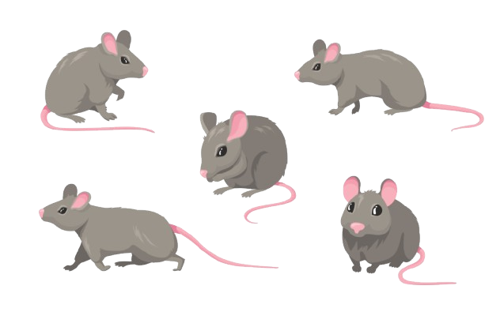

Unsupported resolution
This resolution and lower ones are not supported by this application.
v

 MOUSEFRAME - Info and details
MOUSEFRAME - Info and details
Purpose of MOUSEFRAME
- This application aims to minimize exhaustive calculations performed in a laboratiry setting, automating them to a certain extent. Researchers usually obtain these measurements by manually measuring them with a ruler. The paper tracks (where the mice are walking) are digitized and then used here.
- Although scanning these sheets can be also exhaustive, this application offers an intuitive layout and returns results almost instantly which can later be exported to excel datasheets.
- MOUSEFRAME's main task is to transform the scanned sheets (in image format) into a canvas and therefore making it possible to add elements to the image and perform calculations with these same elements.
Information on mice walking behaviour analysis
The front paws of the mice are marked in red and the hind paws in blue. This analysis goes through 8 different types of measurements that are all manually calculated in a laboratory setting. The 8 measures are the following:
- Stride length left front
- Stride length left hind
- Stride length right front
- Stride length right hind
- Overlap Left
- Overlap Right
- Stride Width Front
- Stride Width Hind
The following image shows every measurement type and how it is calculated in simple terms:

How are the values obtained?
All calculations are performed using simple algorithms for calculating the distance between points using javascript. The fact that the user previously marked each paw with its respective location (front/red or rear/blue, left or right), enables these calculations. Through the order of the footprints, the program will run a loop for each set of footprints and perform all the calculations programmed (it is important to emphasize that if the order is somehow changed, the program may not calculate the right measurements). Knowing the way this all works helps avoid wrong measurements.
- Stride length left front: Uses only the red dots on the left measuring the distance from L(x) to L(x+1), x never being the last footprint of this set.
- Stride length left hind: Uses only the blue dots on the left measuring the distance from L(x) to L(x+1), x never being the last footprint of this set.
- Stride length right front: Uses only the red dots on the right measuring the distance from R(x) to R(x+1), x never being the last footprint of this set.
- Stride length right hind: Uses only the blue dots on the right measuring the distance from R(x) to R(x+1), x never being the last footprint of this set.
- Overlap Left: It uses both the red and blue dots on the left side with equal index and calculates the distance between them.
- Overlap Right: It uses both the red and blue dots on the right side with equal index and calculates the distance between them.
- Stride Width Front: It uses the red dots and requires the user to identify whether the first set of footprints is on the left or right. Depending on the location of the first set of footprints, the distance will be between a point and another created imaginary point, which will use the same value of the x coordinate of the first one and the average of the y coordinate between the both red dots in where the measurement is being made. There is an example in figure 2. This method will be improved with time.
- Stride Width Hind: It uses the blue dots and requires the user to identify whether the first set of footprints is on the left or right. Depending on the location of the first set of footprints, the distance will be between a point and another created imaginary point, which will use the same value of the x coordinate of the first one and the average of the y coordinate between the both blue dots in where the measurement is being made. There is an example in figure 3. This method will be improved with time.